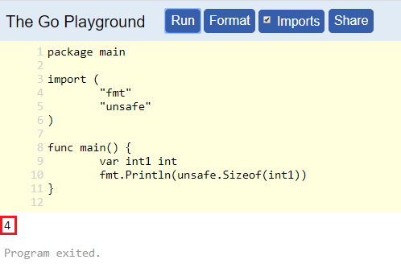
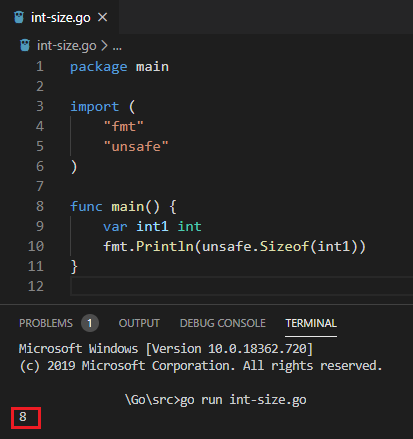

This blog is about a GitHub Security Lab Spot The Bug
challenge that had an overlooked bug. Github Security Lab's Twitter account
tweets code snippets from time to time. The challenge is to spot the bug.
Disclosure: I might be completely wrong because we only have access to the snippet in the picture and people at the GitHub Security Lab are better than me in static analysis.
The Challenge
On April 1st, 2020 they tweeted the following code snippet:
|
|
int vs. int
The answer is not that obvious unless you have been bitten by it.
The size of int in Go is dependent on the system architecture. Looking up
int in the docs:
int is a signed integer type that is at least 32 bits in size. It is a distinct type, however, and not an alias for, say, int32.
This does not give us much information. I think the docs could be clearer than
at least 32 bits in size and not an alias. We can get our answer in A Tour
of Go - Basic Types.
The int, uint, and uintptr types are usually 32 bits wide on 32-bit systems and 64 bits wide on 64-bit systems.
And then it continues with the bad advice that results in the bug above.
When you need an integer value you should use int unless you have a specific reason to use a sized or unsigned integer type.
You really shouldn't use just int if you want to avoid bugs in different
machines. Again, if you have not encountered this bug you really do not know
what to look for.
The Go Playground
I was trying something in The Go Playground and realized the
execution is different than my own machine. After a few hours of
troubleshooting, I realized the playground is running on a 32-bit machine. We
cannot run uname on it but we can see the size of an int there.
|
|
You can run it on the playground at https://play.golang.org/p/4NhqnMKeXTh.
 int on the Go playground is 4 bytesOn my own machine which is running a 64-bit OS, it's 8 bytes (64 bits).
 int on my machine is 8 bytesThe "Official" Answer
Now, we can trace the bug. strconv.Atoi returns (int, error).
So num is of type int. On a 64 bit system, it will be an int64. It is then
converted to int32 on line 10.
target, err := util.LookupTarget(config, int32(num))
On a 64 bit system, if the value inside num is bigger (or smaller if negative)
than what can be stored in an int32 we will encounter an integer overflow. An
int32 can store values between -2^31 and 2^31-1.
We store 2^31 on the int value and then convert it to int32. Let's see
what happens:
|
|
This code prints:
int: 2147483648 - int32: -2147483648
Funnily enough, if you try to run something like int32(int(1<<31)) the compiler
throws this error:
constant 2147483648 overflows int32
The "Official" Fix
The fix is to replace strconv.Atoi with strconv.ParseInt. After all,
according to the docs:
Atoi is equivalent to ParseInt(s, 10, 0), converted to type int.
Looking at the source this is not exactly correct. There is a "quick path" when the length of the string is less than 10 on 32-bit and less than 19 on 64-bit systems.
if intSize == 32 && (0 < sLen && sLen < 10) ||
intSize == 64 && (0 < sLen && sLen < 19) {
// Fast path for small integers that fit int type.
But Why Are You Disagreeing?
Let's say we have a 32-bit system. s could contain a number that does not fit
in int32 (int for this system). Note that s is a string and could have any
large value. You can see it on the Go playground (remember it's a 32-bit
machine) at https://play.golang.org/p/QEKtDWB7SFd.
|
|
strconv.Atoi returns an error message.
strconv.Atoi: parsing "2147483648": value out of range
Going back to our original code on a 32-bit system:
|
|
strconv.Atoi returns the value out of range error and we land in the error
block. Because the code assumes s is not a number and the name of the target,
it tries to call LookupNumberByName with 2147483648.
I do not know how LookupNumberByName works and that is why I might be wrong.
However, if I were creating such a function that tries to look up a name from a
registry I would return an error if I could not find it (remember errors are
values in Go). That means there is a good chance that we land in the error block
on line 9 and we never reach where the "official" answer is.
What Did We Learn Here Today?
intin Go is dependent on the machine. It's 32 bits on a 32-bit machine and 64 bits on 64-bit machines.- The Go playground is running on a 32-bit machine.
- Don't use
int.
I finished this blog at 3 AM and I feel like the below XKCD does the trick.
Notice the WRONG with underscores, the person on the internet might not be
really wrong here but the writer feels like they are.
 Source: https://xkcd.com/386/
Source: https://xkcd.com/386/